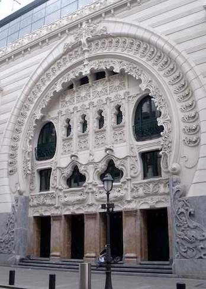

UNDER TRANSLATION
In a big part of the (Spanish) collective imagination, Bilbao is still a synonym for the industrial city. However, today, the blast furnaces and the shipyard cranes symbolize the city’s past. After an exemplary urbanistic reconversion, new architectonical symbols—such as the Guggenheim Museum—show how Bilbao has converted into a vanguard city focused on culture, business and tourism.
Icons of Bilbao
In Bilbao, there are many places that a person can visit. Among the many places, the following are the tourist minimum of the city.
Casco Viejo [Old Quarter]Tourist Route
.jpg)
![Plaza Unamuno [Unamuno Square] in the Old Quarter](https://commons.wikimedia.org/wiki/File:Conjunto_Hist%C3%B3rico_Art%C3%ADstico_el_Casco_viejo.jpg)
The Casco Viejo (‘el Casco’ for short) is the old quarter of Bilbao. The church of San Anton, together with its bridge—the bridge today is not the original that appears in the city's coat of arms—was the origin of Bilbao, to which later on the seven streets would be added: Somera, Artekale, Tendería, Belostikale, Carnicería Vieja, Barrenkale, and Barrenkale Barrena. This original nucleus, together with the Plaza Nueva [New Square], the Plaza Unamuno [Unamuno Square] and some surrounding streets, form the Casco Viejo. Here, we can look and imagine how the first commercial Bilbao of the medieval and modern ages was. At the same time, we can also discover part of the Bilbaine atmosphere while we buy in some shop, taste some pintxos in the hundreds of bars or walk through its streets.
Guggenheim Bilbao Museum Website
.jpg)

As of today, the Guggenheim Bilbao Museum needs little introduction. This is not only the more emblematic building of the city but the symbol of the so-called Bilbao effect: the process of urbanistic reconversion that took Bilbao from being an industrial city in decadence to a service city on the rise. Designed by the architect Frank O. Gehry, one does not need to enter the museum to appreciate the diverse curves of the characteristic titanium layers of its facade.
Even if one does not plan to visit this museum of contemporary art, one must go around the museum to appreciate the geometry of the shapes of its facade, as well as the various sculptures that surround it, among which the following stand out: the Puppy, of sculptor Jeff Koons; and Maman, of sculptor Louise Bourgeois. In the interior, we can enjoy the temporal exhibitions of the museums, as well as The Matter of Time of sculptor Richard Serra, one of the most important permanent collections of the museum.
Bilbao MetroWebsite
Even if one does not need to use the metro during Eir visit, one should visit some of the metro stations of Bilbao to appreciate their design. Unlike other older metros such as the ones of Buenos Aires, Paris or London, the Bilbao Metro is relatively new—it has existed only since 1995—and is designed in all its details by the architect Norman Foster. The late construction of the metro is why its stations are ample and luminous, in contrast with the old metros of other cities.

In the metro stop of Moyua, if one enters through the Ercilla/Elcano entrance, a signature by Norman Foster himself can be found. Moreover, if one has time, visiting the metro station of Sarriko is recommended because it is radically different from the other metro stations.
Athletic Club BilbaoWebsite

No presentation of Bilbao is complete without mentioning its iconic football team: the Athletic Club Bilbao. Together with Real Madrid and the Barça, this iconic team, founded in 1898, is one of the three historical teams of the (masculine) league that have always played in 1st division. Moreover, today, the Athletic is one of the teams with the most Copas del Rey in its history, only behind the Barça. However, its philosophy and fanbase characterize the Athletic over other teams.
Known as the Athletic philosophy, the Athletic Club Bilbao only accepts players from or that have been instructed in the Basque territories—understood in the broad sense of Euskal Herria. The Bilbaine fanbase characterizes itself for its devotion and fervor towards its team, which we can appreciate in the behavior of the fans before, during and after each match. This devotion—almost religious—manifests itself in a unique way in the naming of the football stadium—the San Mamés—as ‘La Catedral’ [The Cathredal], a denomination that precedes the existence of a cathedral in Bilbao.
The Female Athletic Club celebrating
the victory of the 2006/07 league
Picture by Katxijasotzaile (Public Domain)
Since 2002, the Athletic Club has had a female team. In its short history, this team has been five teams winner of the female league of football.
Walk along the EstuaryRoute (Google Earth)
Packed in the past with industries and rails, the bank of the Estuary of Bilbao is a witness to the transformation of the industrial Bilbao into the contemporary iconic Bilbao of today. Because of this, taking a walk along the estuary—from the church of San Antón to ‘la Catedral’—is the best way of getting to know the Bilbao of today and appreciate its architectural landmarks. To make this route effortless, we describe it and offer a link to Google Earth and a file in KML format.

.jpg)

We recommend beginning at the church of San Antón. There, walk towards the Mercado de la Ribera [Ribera Market] along the bank until arriving at the Teatro Arriaga [Arriaga Theater]. Then, continue through el Arenal—the riverside—until the Ayuntamiento [City Hall]. Afterward, continue along the bank, observing how the Isozaki Atea [Isozaki Gate] becomes bigger until you arrive at the ZubiZuri bridge [in Basque, literally “White Bridge”]. Once at the bridge, cross it and continue walking on the other side in the same direction until you cross under La Salve bridge and arrive at the Guggenheim Museum.
In the surrounding of the museum, you can enjoy its facade and its great sculptures. Afterward, continue through the Paseo de la Memoria [Walk of the Memory] until arriving at the Bizkaia Aretora [Biscay Auditorium] of the University of the Basque Country. Then walk towards the Plaza Euskadi [Euskadi Square], from where one can appreciate the Torre Iberdrola [Iberdrola Twoer] and the Museo de Bellas Artes de Bilbao [Bilbao Fine Arts Museum]. After this, walk to the Puente de Deusto [Deusto Bridge], a bascule bridge that can open to permit maritime traffic. From there, without crossing the bridge, go down to the walk using the stairs and continue walking along the riverside. To the left, one will see the Palacio Euskalduna [Euskalduna Hall] and will finally arrive at the dependencies of the now inexistent astilleros Euskalduna [Euskalduna shipyards], presided today by the red Carola crane.
To end the walk, we can approach to observe la Gabarra, the ship with which the Athletic parades through the estuary with its successes. Finally, after going into an “athletic mood”, we can walk to ‘La Catedral’, also known as the San Mamés Stadium.
Culture and Leisure
in Bilbao
Like any other city, Bilbao offers excellent cultural and leisure activities. Unfortunately, we cannot be entirely exhaustive. Therefore we only show some of the museums, theaters, concert halls and going out zones of Bilbao that might be of interest.
Museums
Guggenheim Bilbao Museum
.jpg)
Picture by Naotake Murayama (CC BY 2.0)
Emblem of the iconic Bilbao, this museum is an obligatory stop for everyone who visits Bilbao. From the inside, we can appreciate an aspect of its architecture that we cannot observe from the outside and view contemporary art exhibitions of the first level, such as the permanent sculptural installation The Matter of Time by sculptor Richard Serra.
More about Guggenheim BilbaoBilbao Fine Arts Museum

Picture by MuseoBBAABilbao (CC BY-SA 3.0)
The Bilbao Fine Arts Museum is one of the most important museums of the Basque Country and Spain. Its permanent collection contains artworks of every style and period since the 13th century, where the works of the Basque and Spanish schools stand out. Of this last school, this museum is the institution of reference.
More about the Bilbao Fine Arts Museum
Basque Museum
(Basque Ethnographic-Historical Museum)
_1.jpg)
Picture by Zarateman (CC0 1.0)
The Basque Museum—or Euskal Museoa—is the archeological and ethnographical museum of the Basque Country. Situated in the old Jesuit school, this museum allows us to learn—through its extensive collections—about the cultures, traditions, ways of being and daily routines of the people who have inhabited the Basque region through the ages.
More about the Basque Museum
Itsasmuseum Bilbao
(Maritime Museum of Bilbao)

Picture by Xabier (CC BY-SA 4.0)
The Itsasmuseum Bilbao is the maritime museum of Bilbao. Located in what was part of the astilleros Euskalduna [Euskalduna shipyards], this museum allows us to learn the history of the maritime activity of the Estuary of Bilbao. Moreover, the museum has a collection of ships that can be observed (freely) in the dry docks on the museum's exterior.
More about the ItsasmuseumThe House of the Basque Language

Picture by Azkue Fundazioa (CC BY-SA 2.0)
The House of the Basque Language—Euskararen Etxea—offers, through its Basque Language Interpretation Centre, an exhibition where we can learn about the multiple facets of one of the most singular languages of the world: Euskera, also known as the Basque language. In this way, this exhibition (with materials in Basque, Spanish, English and French) is an excellent starting point for those who want to learn more about the Basque language.
More about the House of the Basque LanguageMuseum of the Athletic Club Bilbao
The Athletic Club Museum allows us to learn in detail about this centenary football team of Bilbaine city, which has been a central part of the life of its people. In this way, whether you are a football fan or not, this museum is an excellent option for getting to know a central element of the history of Bilbao. Moreover, there is the possibility of visiting the football stadium both in a group and individually with an audio guide.
More about the Athletic MuseumTheaters and Cultural Spaces
Azkuna Zentroa - Alhóndiga Bilbao

Picture by Zarateman (CC0 1.0)
The Azkuna Zentroa - Alhóndiga Bilbao also hosts exhibitions of high cultural interest. However, this recovered old wine warehouse is today an integral cultural and leisure center where all kinds of cultural activities (lectures, dancing, theater...) are offered. Moreover, it has a library, a gym and cinemas.
More about the Alhóndiga
Teatro Arriaga
[Arriaga Theater]
Picture by Pedro J Pacheco (CC BY-SA 3.0 ES)
The Teatro Arriaga [Arriaga Theater] is the oldest theater of Bilbao, dating from 1890. In it, you can see theater representations, musicals, dances, concerts, zarzuela... Its name honors the Bilbaine composer Juan Crisóstomo de Arriaga, known as the “Basque Mozart”.
More about the Arriaga
Teatro Campos Elíseos
[Campos Elíseos Theater]

Picture by Zarateman (CC0 1.0)
The Teatro Campos Elíseos [Campos Elíseos Theater] is another one of the traditional theaters of Bilbao. Constructed in 1902, its facade—designed by the architect Jean Batiste Darroquy—is an example of Art Noveau architecture in the Basque Country. Moreover, after its restoration in 2010, this theater was modernized to adapt to the scenographic needs of today.
More about the Campos Elíseos
Palacio Euskalduna
[Euskalduna Hall]
Picture by Ardfern (CC BY-SA 3.0)
Constructed in 1999, where the astilleros Euskalduna [Euskalduna shipyards] were, the Palacio Euskalduna [Euskalduna Hall] is a conference center and concert hall, which has become another symbol of the transformation of Bilbao from an industrial city into a service city. Nowadays, the building is the venue of the Bilbao Symphony Orchestra.
More about the Euskalduna
La FuNdicIOn Aretoa
La FuNdicIOn Theater

Founded in 1986, la FuNdicIOn is a vanguard theater where one can enjoy contemporary scenic creations—of theater and dance—at the local, national and international levels. Moreover, this theater aspires to become a point of contact for the public with the vanguards of theater and dance, for which it searches for new forms of interactions artist-public.
More about la FuNdicIOn
Pabellón Nº 6
[Pavilion Nº 6]

Pabellón Nº 6 [Pavilion Nº 6] is a theatrical project and theater created in 2011 by several personalities in the world of theater and dance. Nowadays, this theater is one of the referents of the independent Basque theater, having a theater laboratory as a space of creation and encounter; and a young (theater) company for developing the project of young people formed in scenic arts.
More about el Pabellón Nº 6
Espacio Open
[Open Space]
Picture by Josué Tonelli-Cueto
Created in 2009, Espacio Open [Open Space] is a cultural center in the old cookie factory of Bilbao, in the neighborhood of Zorrotzaurre. In this space, there are creation centers, such as Fab Lab Bilbao, and several developing artistic projects, some open to the general public. This center was one of the first initiatives that contributed to the transformation of Zorrotzaurre into a neighborhood of the arts. Apart from the already mentioned Fab Lab Bilbao inside this space, Jardín Secreto [Secret Garde] and Vintage Bilbao stand out.
More about Espacio Open
Zorrotzaurre Art Work in Progress
(ZAWP)

Created in 2011, Zorrotzaurre Art Work in Progress (ZAWP) is an artistic movement situated in the neighborhood of Zorrotzaurre, which plays an essential role in transforming this neighborhood into a neighborhood of the arts. This movement counts with scenic spaces, such as the hACERIA Aretoa [hACERIA Theater], and working spaces for artists. Until 2011, it hosted Pabellón Nº 6.
More about el ZAWPGoing Out and Poteo Zones
Casco Viejo

Plaza Nueva en el Casco Viejo
Picture by Mike Mirano (CC BY 2.0)
A parte de ser el núcleo histórico de la ciudad, el Casco Viejo es también una de las zonas de alterne de la ciudad con sus diversos bares—y sus pintxos—y el ambiente que se crea con la gente. Ya sea de día o de noche, el Casco Viejo es un lugar ideal para vagar de bar en bar probando pintxos y tomando zuritos. De todas las zonas para esto, nuestras recomendaciones son la Somera, la Plaza Nueva y la Plaza Unamuno.
Además, en el Mercado de la Ribera, podemos disfrutar tanto de una amable atmósfera como de los productos de alta calidad que se ofrecen en el.
Pozas
La calle Licenciado Pozas o Pozas, como es llamada por les locales, una larga calle de bares que va desde el edificio de la Diputación Foral de Bizkaia hasta la Catedral, como se le llama localmente al estadio San Mamés. Cualquiera de los días, podemos hacer una ruta de pintxos transitando los bares de esta case. Sin embargo, esta calle tiene su máxima afluencia en los entornos de los partidos del Athletic, que es cuando se puede experimentar en ella la pasión y fervor bilbaínos por este equipo centenario.
Gastronomía
en Bilbao
La gastronomía es uno de los principales atractivos de Bilbao. La villa es actualmente uno los mejores destinos gastronómicos de nuestro país, con una oferta variada, económica y de categoría. Es más, Bilbao es la sede de varios de los mejores restaurantes del mundo, ya que, a 2022, contaba con seis restaurantes premiados con estrella Michelin. Sin embargo, no hace falta ir a uno de estos restaurantes premiados para disfrutar de una gran experiencia gastronómica en la villa, ofreciendo los restaurantes más económicos una excelente relación calidad-precio.
A día de hoy, Bilbao—y el País Vasco—es conocida por sus pintxos, que son elaborados aperitivos propios de nuestra región. Anualmente, los bares bilbaínos compiten por preparar el mejor pintxo, y la villa cuenta con numerosas rutas gastronómicas que permiten recorrer la ciudad degustando los pintxos más icónicos y mejor valorados.

.jpg){kind=link}
.JPG){kind=link}
{kind=link}
{kind=link}
.jpg){kind=link}
.JPG){kind=link}
Una Breve Historia de Bilbao
Con sus más de 700 años, es difícil resumir la historia bilbaína en unos pocos párrafos. El objetivo de esta breve historia no es dar una historia detallada, sino transmitir el desarrollo de esta villa y su modo de ser en un texto breve que transmita como Bilbao pasó de ser un núcleo comercial del reino de Castilla a la ciudad icónica de hoy en día pasando por su definitorio periodo industrial.
Bilbao como Núcleo Comercial (siglos XIV-XVIII)
Bilbao fue fundada en 1300 por Don Diego López V de Haro, entonces señor de Vizcaya, mediante Carta Puebla, que fue firmada en 1301 por el rey Fernando IV de Castilla. A día de hoy, la plaza de Abando está presidida por este fundador quien sujeta en su mano la Carta Puebla que dió origen a la villa. Tras recuperar el Señorío de Vizcaya a la muerte de su tío López V de Haro quien se lo había arrebatado a la muerte del rey Sancho IV, María Díaz de Haro legitima fundación de Bilbao otrogando una nueva carta a la villa en 1310.
Esta nueva carta estableció nuevos privilegios a la villa, convirtiendo a Bilbao en puerto de obligado paso para el comercio del reino de Castilla con el mar. Esto convirtió a Bilbao en un importante centro comercial de Castilla y propicio el desarrollo de la villa. Sin embargo, el carácter—y privilegio—comercial de Bilbao generaró tensiones con las anteiglesias y otras villas de Bizkaia que veían como su poder político y económico iba dismuyendo en favor de una incipiente Bilbao. En el siglo XVII, tras arrebatar Bilbao la capitalidad de Bizkaia a Bermeo, comenzaría un periodo de crisis y conflictos en Bizkaia que resultaría en varios alzamientos (las machinadas) a lo largo de los siglos XVII y XVIII. Sin embargo, a pesar de ello, Bilbao fue consolidando tanto su poder económico como político dentro de Bizkaia.
Una muestra del poderío comercial desarrollado por Bilbao en este periodo tanto a nivel nacional e internacional se puede apreciar en la palabra inglesa bilbo/bilboa surgida a finales del siglo XVI. Esta palabra, cuyo significado se refiere a una espada o a un tipo de barra usada para confinar los pies de prisioneros en barcos, muestra la importancia del comercio objetos derivados del hierro en Bilbao—un hecho que será fundamental en el nacimiento de la Bilbao industrial.
La Bilbao liberal frente al Carlismo (siglo XIX)
El siglo XIX está marcado principalmente por el conflicto entre las formas más liberales—burguesas—de política que surgían y las formas más tradicionales, que desembocaron en las guerras civiles conocidad como las guerras carlistas. Durante este periodo, el caracter burgués de Bilbao se materializó en el hecho de que Bilbao se convirtió en un símbolo del liberalismo dentro de Bizkaia. Debido a esto en parte y su importancia económica, en la primera y tercera guerras carlistas, Bilbao fue un objetivo bélico importante de los carlistas. En ambas guerras, el bando carlista asediaría Bilbao no una ni dos, sino tres veces: does en la primera guerra carlista y una en la tercera.
A pesar de los tres asedios carlistas (en 1835, en 1836 y en 1874), Bilbao resistió convirtiéndose así en un símbolo de la victoria del liberalismo sobre el tradicionalismo. Estos asedios forman también parte de la mitología bilbaína del bacalao, siendo la leyenda—muy probablemente falsa dado que las evidencias de la afición bizkaina al bacalao datan de finales del siglo XVIII—la siguiente:
Un comerciante (al que la leyenda identifica como Simón Gurtubay) pidió erróneamente una tonelada de bacalao al confundirse, en un pedido de bacalao, la ‘o’ disyuntiva de “100 o 120 bacaladas” por un cero. Inicialmente, este comerciante estuvo al borde un ataque de nervios, dado que la cantidad pedida de bacalao era imposible de vender sin que se echara a perder. Afortundamente para este, su desgracia sucedió a la vez que el asedio carlista. Así, cuando la comida empezó a escasear, este comerciante pudo vender su tonelada de bacalao a muy buen precio y el bacalao se convitió en un plato popular bilbaíno.
Edad de Oro: la Bilbao Industrial (1880-1930)
En la segunda mitad del siglo XIX, tras su revolución industrial, Reino Unido estaba en necesidad de un acero de mayor calidad. Motivado por este problema, el inventor británico Henry Bessemer inventó su un nuevo sistema de producción de acero de alta calidad, pero este método requería hierro no fosfórico que esta disponible en dos lugares de Europa: Suecia y el norte de España, en particular los montes de Triano en las inmediaciones de Bilbao. Este hecho, unido a cambios políticos en Bizkaia que permitieron el comercio de hierro fuera de Bizkaia, propiciaron un incremento del comercio de hierro entre Bilbao y el Reino Unido.
Como consecuencia de este comercio, surgieron diversas industrias siderurgicas en Bilbao y sus alrededores: los Altos Hornos de Bilbao, creada en 1882 a partir de la modernización de la fábrica de Nuestra Señora de El Carmen fundada en 1854 por los hermanos Ybarra; la Vizcaya, creada en 1882 por el grupo liderado por Pedro Pascual Gandarias; y la Iberia, creada en 1890 a partir de la empresa Goitia y Compañía fundada por un grupo de guipuzcoanos. Todas estas empresas se fusionarían en 1902 en la que fue la mayor empresa española del siglo XX: los Altos Hornos de Vizcaya, la que sería en cierto modo el símbolo de la Bilbao industrial.
Esta revolución industrial bilbaína forjó el Bilbao del imaginario colectivo. Bilbao multiplicó su población por ocho en la última decada del siglo XIX debido al influjo de inmigrantes. Será en esta época cuando Bilbao empezó a expandise y absorver las anteiglesias de sus alrededores, como sucedió durante el ensanche de Bilbao. Además, estos fuertes cambios demográficos bilbaínos fueron además el caldo de cultivo para el desarrollo local de los movimientos políticos que jugarían un papel central en la política española del siglo XX: el nacionalismo vasco, los movimientos obreros y el socialismo, el republicanismo y el liberalismo monárquico. Muestra de esta efervecencia de ideas en Bilbao son figuras vincualadas a la villa como Miguel de Unamuno, el famoso escritor y filósofo bilbaíno; Sabino Arana, fundador del nacionalismo vasco y el Partido nacionalista Vasco; Resurreción María de Azkue, fundador y primer presidente de Euskaltzaindia (Real Academia de la Lengua Vasca); e Indalecio Prieto, un político socialista que fue ministro durante la 2.ª República.
Finalmente, es en esta Bilbao industrial donde el Athletic Club Bilbao es fundado en 1898. Este club de fútbol, su estadio—conocido como La Catedral desde antes de que Bilbao tuviera una catedral—y su particular filosofía son ha día de hoy una parte esencial de la vide bilbaína con más de 130 años de fervor, historia y tradición.
Bilbao durante la 2.ª República, la Guerra Civil y el Franquismo (1931-1975)
Durante la 2.ª República, Bilbao fue una ciudad llena de pluralismo político—nacionalistas, socialistas, comunistas, liberales...—que se prolongó hasta la Guerra Civil. Durante la Guerra Civil, Bilbao fue la sede del primer Gobierno Vasco liderado por el lehendakari José Antonio Aguirre. A pesar de su resistencia y su Cinturón de Hierro, Bilbao cayó ante el bando nacional en 1937. Sin embargo, en su retirada, las tropas nacionalistas y republicanas, por orden del Gobierno Vasco, no destruyeron la industrias de Bilbao “para poder garantizar el sustento del pueblo vasco”. Este hecho garantizó el papel de Bilbao y sus altos hornos como núcleo industrial de España durante el franquismo.
Durante el franquismo, Bilbao sufrió altas dosis de represión. Sin embargo, el franquismo continuó desarrollando la industria bilbaína, lo cual atrajo a la villa bilbaína inmigrantes de todo el estado. Las malas condiciones de estes propiciaron, en 1947, la primera huelga en la España de la posguerra. A pesar de la respuesta impacable de las autoridades franquistas, esta huelga marca el comienzo de un proceso de activación y radicalización de los movimientos nacionalistas y obreros frente a la dictadura que desembocará en una serie de conflictos laborales y políticos—cada vez más violentos—desde los años 60 hasta el final del franquismo. Así, al terminar el franquismo, Bilbao se encuentra llena de grandes esperanzas sociales y políticas, pero en un clima altamente violento marcado por la continuada actividad de ETA y otros grupos terroristas más allá del fin de la dictadura.
Crisis y Reconversión Industrial (1976-1996)
Tras la llegada de la democracia, el País Vasco se articula en Comunidad Autónoma a través del Estatuto de Autonomía de Guernica en 1979. Sin embargo, las pretensiones de Bilbao a la capitalidad vasca fracasan cuando es Vitoria la elegida como capital. Si esto no fuera poco, la industria siderúrgica bilbaína entra en una grave crisis en los años ochenta. Uno de los mayores símbolos de esta crisis es el cierre de los astilleros Euskalduna en 1988, después de que sus trabajadores se opusieran durante años al cierra mediante manifestaciones y enfrentamientos a la policía. Marcada así esta crisis, por multitud de conflictos sociales y políticos, la decada de los ochenta marca el final de la Bilbao industrial y sus altos hornos en el llamado proceso de reconversión industrial.
Además, esta época está marcada por las terribles inundaciones de 1983 en las que la ría subío hasta cinco metros de altura. El impacto de estas inundaciones se vio incrementado por el hecho de que estas sucedieron en pleno agosto, en plenas fiestas de Bilbao durante la Aste Nagusia, y en las que murieron una treintena de personas. En una nota más positiva, fue en 1983 y en 1984, cuando el Athletic Club Bilbao consiguió ganar La Liga dos veces consecutivas, tras llevar desde 1956 sin ganar la competición.
Edad de Plata: la Bilbao Icónica (desde 1997)
En 1995, el cierre de los Altos Hornos de Vizcaya marca la muerte definitiva de la Bilbao industrial. Sin embargo, mientras sus industrias cerraban, Bilbao se preparaba para realizar una reconversión urbanística sin precedentes a nivel global. A comienzos de los noventa, se crea la asociación Bilbao Metrópoli-30, para transicionar Bilbao y sus alrededores desde un ámbito industrial a un ámbito de cultura y servicios; y la sociedad Bilbao Ría 2000, para regenerar los espacios industriales no utilizados de Bilbao.
Este proceso de regeneración tiene su primera culminación con la innauguración de la red inicial de Metro Bilbao, en 1995; y el Museo Guggenheim Bilbao, en 1997. A estos le siguen diversos iconos del nuevo Bilbao que conformaran la Bilbao icónica de hoy en día: la Isozaki Atea, el ZubiZuri, la Torre de Iberdrola, el paseo de la ría, la restauración de la Alhóndiga como centro cultural y de ocio... Sin embargo, este llamado Efecto Bilbao, que tantas otras ciudades en el mundo han tratado de imitar, no puede reducirse simplemente a los iconos arquitectónicos de la villa, sino a un profundo proceso de restructuración económica y estructural de Bilbao y sus alrededores durante los años noventa.